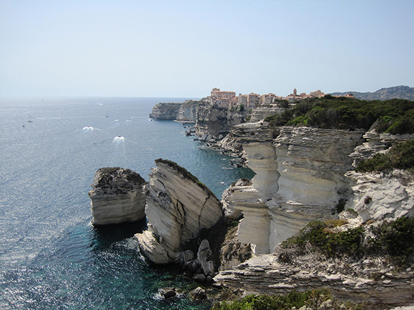
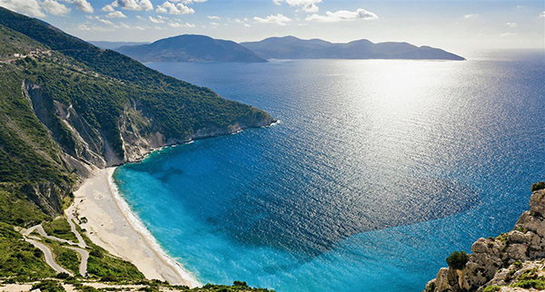
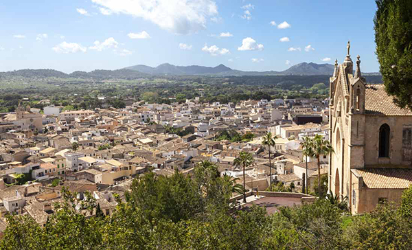

Die Insel Korsika gehört zu Frankreich. Die Insel ist 8,681 Quadratkilometer groß und wird von 275.000 Korsen bewohnt. Hauptstadt ist Ajaccio.
Eine Insel für alle! Es gibt nur wenig, was die viertgrößte Insel im Mittelmeer nicht bietet: Skifahren auf 2000 Meter hohen Bergen, Buchten mit feinen Sandstränden und Pinienhainen, Naturschutzgebiete zum Wandern und auch Segler kommen auf ihre Kosten.
Beste Reisezeit: Skifahrer kommen im Januar und Februar, Strandurlauber zwischen Ende Mai und Mitte September und wer vor allem wandern will, reist zwischen Juni und September an.

Blick ueber die Felsenkueste Bonifacioszum Start
GRIECHENLAND
Karpathos
Eine Insel für Individualreisende. Die zweitgrößte Dodekanes-Insel ist zwar mit dem Flugzeug erreichbar, vom Massentourismus bisher aber verschont geblieben. Zwischen schroffen Felslandschaften und knorrigen Olivenbäumen bietet die Insel zauberhaft einsame Buchten und gilt unter Surfern als windsicherster Ort Europas.
Besonders: der mit dem Auto nur schwer erreichbare Ort Olymbos, in dem aufgrund seiner Isolation viele alte Kulturen erhalten geblieben sind.
Beste Reisezeit: Am angenehmsten ist es von April bis Ende Juni sowie von September bis Anfang November. Der stete Wind macht aber auch die heißen Sommermonate erträglich.
Kefalonia
Die griechische Insel Kefalonia ist 781 Quadratkilometer groß und hat ca. 37.000 Einwohner, die Hauptstadt ist Argostoli. Die Insel liegt am Ausgang des Golfs von Patras. Im Inselranking liegt Kefalonia im Mittelmeer zwar nur auf Platz elf, sie ist aber die größte der Ionischen Inseln.

Kefalonia
Korfu
Die griechische Insel Korfu ist 592 Quadratkilometer groß. Auf dem Eiland leben etwa 108.000 Einwohner. Korfu ist die nördlichste und zweitgrößte der sieben großen Ionischen Inseln. Korfu liegt im Ionischen Meer, dieses grenzt an die Adria. Korfu zählt zu den wohlhabendsten Regionen in Griechenland.
Eine Insel für Pauschaltouristen. Die westlichste der griechischen Inseln bietet zwar auch noch ein paar lauschige Dörfer für Individualreisende. Der Osten der Insel ist dagegen weitgehend von Hotelanlagen für den Massentourismus bestimmt.
Beste Reisezeit: Gebadet wird im Sommer, wer Wandern oder Fahrrad fahren will, kann auch auf die Nebensaison ausweichen, also April bis Juni beziehungsweise September und Oktober.
Kreta
Die fünftgrößte Insel im Mittelmeer, Kreta, ist die größte griechische Insel. Kreta ist 8,312 Quadratkilometer groß, es leben 624.000 Menschen hier. Die Hauptstadt ist Heraklion.
Eine Insel für viele unterschiedliche Bedürfnisse. Die größte griechische Insel bietet unzählige Strände für Sonnenanbeter, aber auch antike Ausgrabungsstätten für Kulturinteressierte. Wandern kann man im Lefká-Orí-Gebirge im Süden der Insel. Im Norden befinden sich vor allem die touristischen Zentren.
Beste Reisezeit: Im Sommer ist es sehr heiß und trocken, vor allem im Süden der Insel, die vom afrikanischen Klima beeinflusst wird. Der Norden hat ein angenehmeres Klima, vor allem von April bis Oktober.
Naxos
Die zu Griechenland gehörende Insel Naxos liegt im Ägäischen Meer. Die 428 Quadratkilometer große Insel ist die größte Insel der Kykladen. Auf der Insel leben 18.000 Einwohner. Hauptort und Haupthafen der Insel ist Naxos (Chora).
Santorin
Eine Insel für Griechenlandfans mit Geld. Hier sieht Hellas wie eine Postkarte aus: weiß getünchte Häuser und Kirchen mit blauen Kuppeldächern. In der Hauptsaison gelangen Urlauber mit Charterflugzeugen auf die Hauptinsel des Archipels, Thira. Neben urigen Bergdörfern bietet die Insel den schwarzen Sandstrand von Perissa, felsige Mondlandschaften und eine reiche Auswahl an Hotels und Ferienwohnungen.
Beste Reisezeit: Hier gibt’s Sonne satt und im Sommer Durchschnittstemperaturen von 29 Grad. Wem das zu heiß ist, der kommt im Frühling oder Herbst, wenn das Klima etwas milder wird.
Gehört zu Italien. Berühmt geworden ist die Insel für ihren Sonnenuntergang, aber die italienische Felseninsel im Golf von Neapel ist auch ansonsten so bezaubernd wie überall behauptet. Nur fünf Kilometer vom Festland entfernt, eignet sie sich für einen Tagesausflug von Neapel aus.
Ein Muss: die nadelförmigen Felsformationen Faraglioni und die Blaue Grotte im Nordwesten der Insel.
Beste Reisezeit: Das Klima auf Capri ist immer ausgeglichen mild, die Vegetation daher üppig und grün. Mai und September eignen sich am besten, dann ist die Insel nicht so überlaufen.
Elba
Eine Insel für Wassersportler! Die Insel bietet nicht nur Sandstrände und Kastanienwälder, sondern auch jede Menge Möglichkeiten über und unter Wasser: Segeln, Kajak fahren, und Tauchen.
Beste Reisezeit: Im Frühjahr regnet es zwar ab und zu mal, die Insel ist aber auch noch nicht so voll wie in den heißen und trockenen Sommermonaten. Schön ist auch der Herbst, wenn das Meer noch warm ist, die Insel aber etwas leerer.
Sardinien
Auch Platz zwei der größten Inseln im Mittelmeer gehört zu Italien und zwar die 23,813 Quadratmeter große Insel Sardinien. Auf Sardinien leben 1,656 Millionen Einwohner, die Hauptstadt ist Cagliari und auch Sardinien ist eine autonome Region Italiens.
Eine Insel für Strandurlauber mit Ruhebedürfnis. Auf Sardinien wird an weißen Sandstränden und türkisblauen Küsten vor allem entspannt. Viel mehr ist auch nicht drin, es gibt nur wenige Sehenswürdigkeiten – sieht man einmal vom Schaulaufen der Schönen und Reichen an der Costa Smeralda ab.
Beste Reisezeit: Wenn die Schulferien der Festlanditaliener im Juli und August beginnen, wird es voll auf der Insel. Mehr Ruhe gibt es davor und danach. Den meisten Regen gibt es statistisch im Mai und Oktober.
Sizilien
Sizilien, Italien, 25,460 Quadratkilometer, 5,01 Millionen Einwohner, Hauptstadt Palermo.
Sizilien ist eine autonome Region in Italien. Es ist die größte und die bevölkerungsreichste Insel im Mittelmeer.
Eine Insel für kulturinteressierte Badefreunde. Neben vielen schönen Stränden gibt es viele geschichtliche: Hinterlassenschaften von Phöniziern, Griechen, Arabern und Spaniern. Wer es sich zutraut, sollte einen Ausflug zum Vulkan Ätna machen.
Beste Reisezeit: Wie überall in Italien ist es auch auf Sizilien während der italienischen Schulferien sehr überlaufen. Richtig schön wird die Insel im September und Oktober. Es ist nicht mehr so heiß, aber das Meer ist noch warm.
Formentera bietet karibisches Urlaubsfeeling. Die kleinste Insel der Balearen ist nur per Fähre zu erreichen und deshalb nicht so überlaufen wie Ibiza oder Mallorca.
Ibiza
Ibiza ist die drittgrößte spanische Insel im Mittelmeer und die größte Insel der Pityusn. Auf 571 Quadratkilometer leben etwa 130.000 Einwohner. Hauptort ist Ibiza-Stadt (Katalan: Ciutat d‘Eivissa).
Eine Insel für Partyhungrige, aber nicht nur die. Obwohl einige der bekanntesten Clubs der Welt auf Ibiza angesiedelt sind, bietet die Insel auch wunderschöne ruhige Ecken für Urlauber, die dem Party-Alter entwachsen sind.
Beste Reisezeit: Echte Ruhe bietet die Insel von Herbst bis Frühling. Im Sommer kann es lauter werden. Auf wen Sie sich dann einstellen müssen, sehen Sie gleich am Flughafen.
Mallorca
Die zu Spanien gehörende Insel Mallorca liegt auf Platz sieben des Insel-Ranking. Es ist die größte Insel der Balearen. Auf der 3.640 Quadratkilometer großen Insel leben 846.000 Einwohner ständig. Mallorca gehört zur Autonomen Region der Balearen.
Eine Insel für Deutsche. Nicht umsonst wird die größte Balearen-Insel als 17. Bundesland bezeichnet. Das Gute: Die verschiedenen Touristengruppen sind fein säuberlich voneinander getrennt: Gefeiert wird am Ballermann, geradelt in den Bergen, gewandert durch das Hinterland und gebadet in einer der zahlreichen Buchten. Unterkünfte gibt’s zuhauf – von günstig bis superteuer.
Beste Reisezeit: Sportlich Aktive Urlauber besuchen die Insel von März bis Mai, im Sommer wird es sehr voll und heiß. Im Herbst kommen die Wanderer und Gruppenreisenden.

Mallorca
Menorca
Platz 12 geht an Menorca, der nach Mallorca zweitgrößten spanischen Insel im Mittelmeer. Hauptort der 694 Quadratkilometer großen Insel ist Mahon. Auf Menorca leben etwa 87.000 Menschen.
Zusammen mit Mallorca gehört die Insel zur autonomen Region der Balearischen Inseln.
Eine Insel für Familien und Paare. Auch wenn immer mehr Touristen sie für sich entdecken, lässt sich nach wie vor ein ruhiger und abgeschiedener Urlaub dort verbringen. Landschaftlich hat die Insel vor allem Felsen und kleine Buchten zu bieten.
Beste Reisezeit: Im Winter kann es schon mal häufiger regnen, dafür ist die Vegetation in den Frühjahrsmonaten auch üppig und grün. Im Sommer wird es heiß mit Temperaturen über 30 Grad.